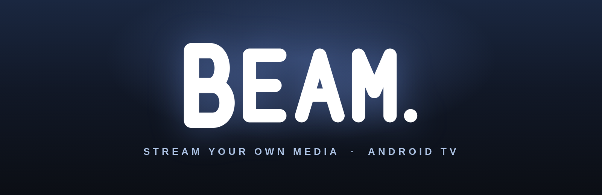
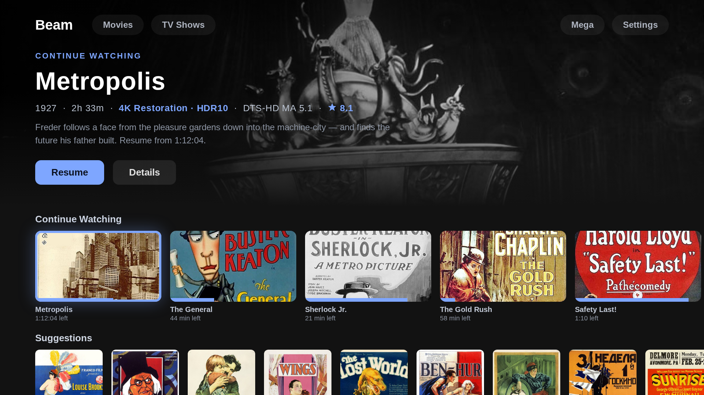

Your cloud storage, your seedbox, your USB drives — one native Android TV library, streamed raw to the big screen.
Get Beam — €12.99
One-time purchase · Instant access · Invoice included
Beam turns an Android TV box into a direct line to your own media, wherever it lives. No Plex server, no transcoding box in a closet, no per-source apps: an embedded engine streams the original bytes straight to the decoder, with RAM read-ahead tuned hard enough that high-bitrate 4K HDR remuxes play smoothly on hardware as old as the 2015 NVIDIA SHIELD.
